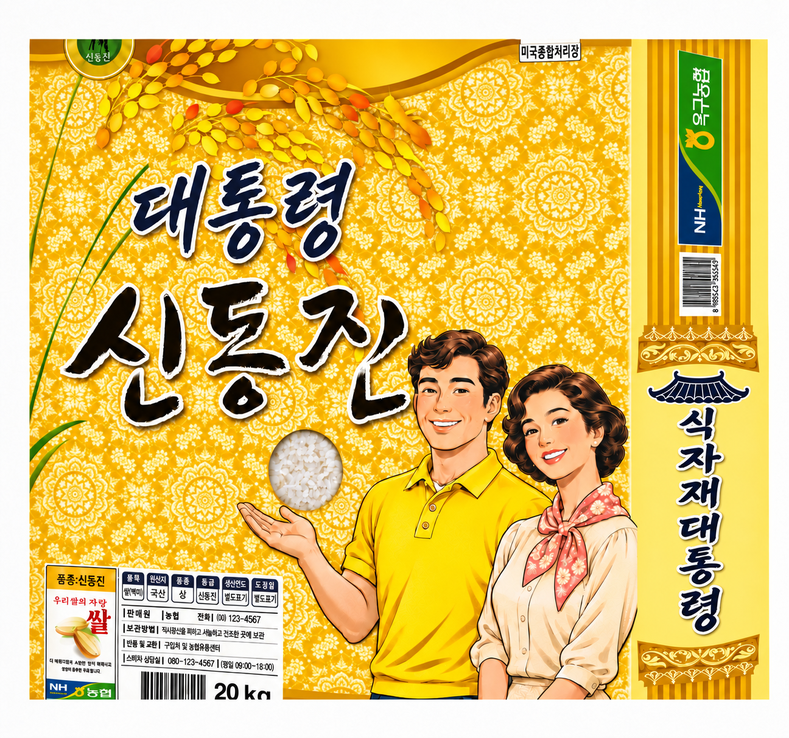
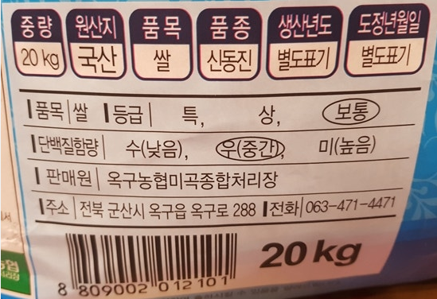

제품 정보
제품 포장에 표시된 품종, 등급, 중량을 확인하세요.
- 품목
- 쌀
- 품종
- 신동진
- 원산지
- 국산
- 중량
- 20 kg
- 등급
- 보통
- 단백질 함량
- 우(중간)
- 생산연도
- 별도 표기
- 도정년월일
- 별도 표기
- 포장 표기 판매원
- 옥구농협미곡종합처리장
- 포장 표기 연락처
- 063-471-4471
생산연도와 도정년월일은 실제 제품 포장에서 확인할 수 있습니다.

식자재대통령
식자재대통령은 주식회사 서울푸드시스템의 식자재 유통 브랜드입니다. 프랜차이즈 식자재 공급과 사업자 대상 도매를 중심으로 운영합니다.
- 법인명
- 주식회사 서울푸드시스템
- 대표
- 이진섭
- 업태
- 도매업(식자재 유통)
- 공식 홈페이지
- 식자재대통령
- 본사 주소
- 경기도 광주시 곤지암읍 광여로 166
사업자 공급 문의
식자재대통령에 제품 공급 가능 여부, 주문 수량, 단가를 문의하세요.